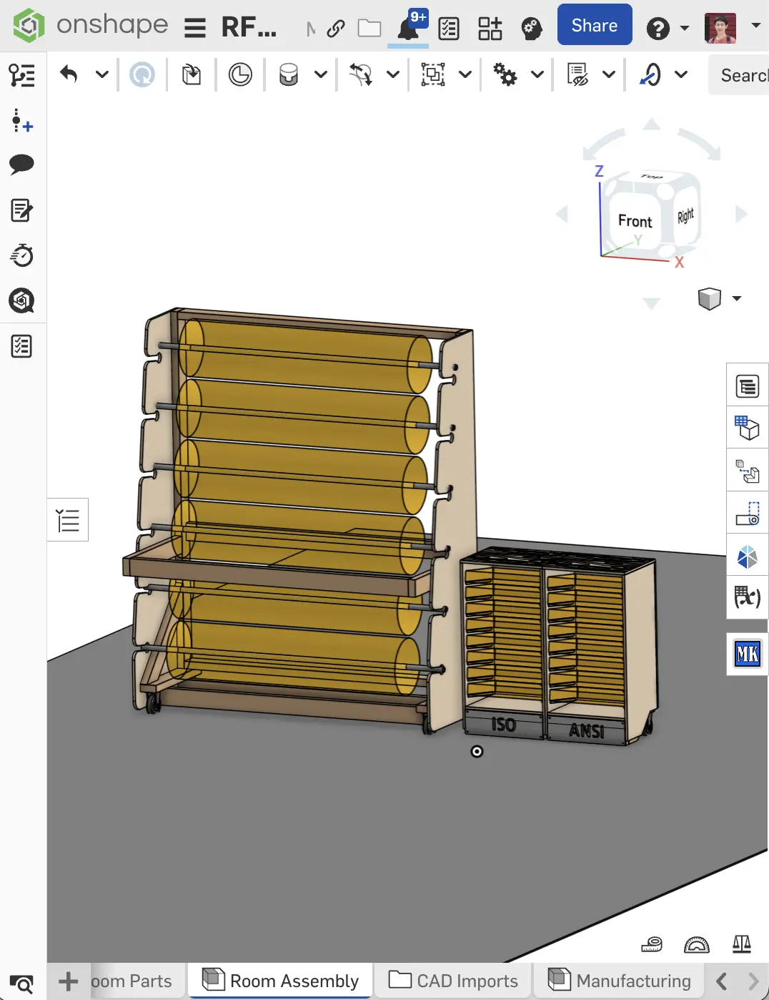
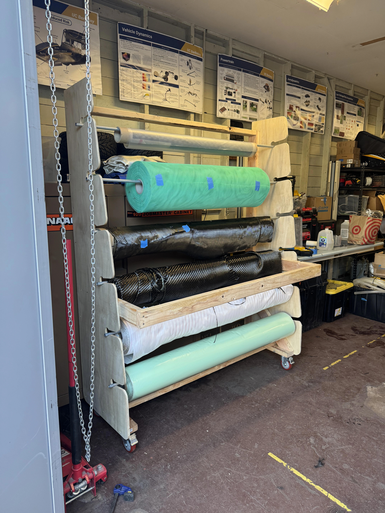
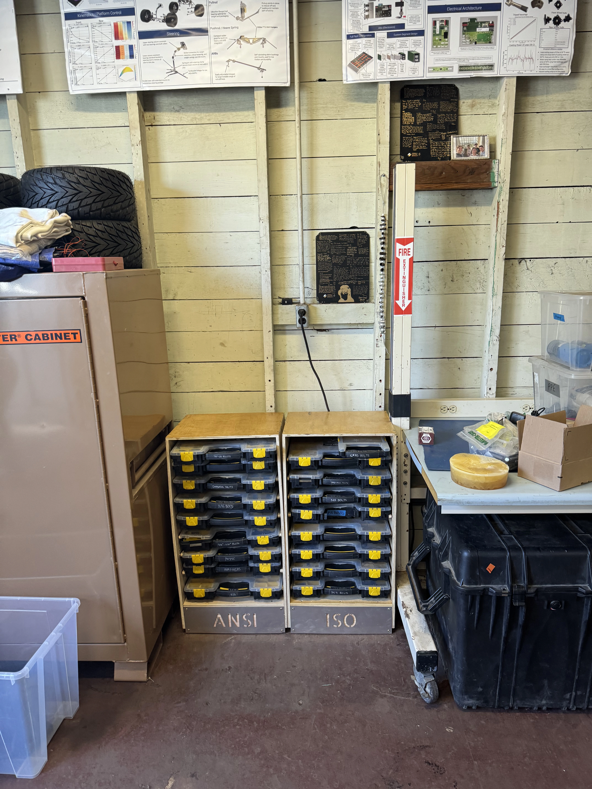

Composites Cart
6-Rack Roller Composite Storage
All UC Berkeley engineering competition teams work out of Richmond Field Station. This year, our team moved from our old shed area to a newer room. Drawing from my prior experience, I proposed and initiated the construction of 2 tool carts, a composites rack, and tool wall in addition to the general workshop layout for streamlined workflows.
TOOLS


The original FEB workshop was in a run-down garage, with a lack of organization for all the parts containers, composite supplies, and tools.
A big improvement that really helped reduce the fabrication time was having a large shopbot CNC router at Jacobs makerspace. For previous projects, all cuts had to be made with a circular saw. With the CNC, this allowed for more custom geometries and improved design joints for alignment.
6-Rack Roller Composite Storage


16 Storage Containers for both ISO and ANSI varieties
Pegboard based adaptive organization system

All parts were coated with protective layers of oil-based polyurethane (wood based surfaces), as well as water-based polyurethane (non-work surfaces). These protective measures will help ensure that the components hold up under high moisture conditions for the workshop.